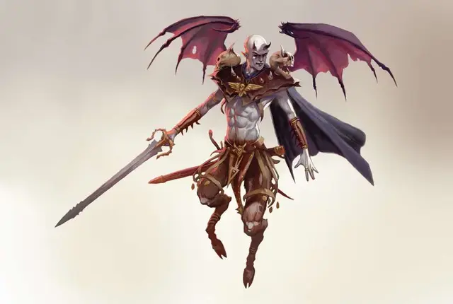

Титивилус
Titivilus
Среднее Исчадие (Дьявол), обычно законно-злое

Класс Доспеха 20 (природный доспех)
Хиты 150 (20к8 + 60)
Скорость 40 футов, летая 60 футов
| мод | спас | ||
|---|---|---|---|
| СИЛ | 19 | +4 | +4 |
| ЛОВ | 22 | +6 | +11 |
| ТЕЛ | 17 | +3 | +8 |
| мод | спас | ||
|---|---|---|---|
| ИНТ | 24 | +7 | +7 |
| МДР | 22 | +6 | +11 |
| ХАР | 26 | +8 | +13 |
Навыки Запугивание +13, Обман +13, Проницательность +11, Убеждение +13
Сопротивление урону холод; дробящий, колющий, рубящий от немагических атак, кроме нанесённых посеребрённым оружием
Иммунитет к урону огонь, яд
Иммунитет к состояниям отравление, очарование, испуг, истощение
Чувства тёмное зрение 120 футов, пассивное Восприятие 16
Языки Все, Телепатия 120 фт.
Опасность 16 (15000 опыта)
Бонус мастерства +5
Особенности
Легендарное сопротивление (3/день). Если Титивилус проваливает спасбросок, он может вместо этого сделать спасбросок успешным.
Сопротивление магии. Титивилус получает преимущество на спасброски от заклинаний и прочих магических эффектов.
Регенерация. Титивилус восстанавливает 10 хитов в начале своего хода. Если он получает урон холодом или излучением, эта особенность не работает в начале его следующего хода. Титивилус умирает только в случае, если начинает ход с 0 хитами и не может регенерировать.
Чревовещание. Когда бы ни говорил Титивилус, он может выбрать точку в пределах 60 фт. от себя; его голос будет звучать из этой точки.
Действия
Мультиатака. Титивилус совершает одну атаку Серебряным мечом и один раз использует Устрашающее слово.
Серебряный меч. Рукопашная атака оружием: +9 к попаданию, досягаемость 5 фт., одна цель. Попадание: 8 (1к8 + 4) урона силовым полем, или 9 (1к10 + 4) урона силовым полем, если использует двумя руками, плюс 16 (3к10) урона некротической энергией. Если цель является существом, её максимальное значение хитов уменьшается на половину значения причинённого некротической энергией урона.
Устрашающее слово. Титивилус выбирает целью видимое существо в пределах 10 футов. Цель должна преуспеть в спасброске Мудрости Сл 21, иначе станет испуганной им на 1 минуту. Испуганное таким образом, существо должно использовать действие Рывок на каждом своём ходу, чтобы двигаться от Титивилуса как можно дальше максимально безопасным путём. Если двигаться некуда, то Рывок не используется. Цель может повторять спасбросок в конце каждого своего хода, завершая на себе эффект в случае успеха.
Использование заклинаний. Титивилус накладывает одно из следующих заклинаний, используя Харизму в качестве базовой характеристики и без использования материальных компонентов (Сл спасброска от заклинаний 21):
• Неограниченно: смена обличья [alter self], образ [major image], необнаружимость [nondetection], послание [sending], внушение [suggestion];
• 3/день каждое: фальшивый двойник [mislead], изменение памяти [modify memory].
Телепортация. Титивилус магически телепортируется в видимое свободное пространство, находящееся в пределах 120 футов от него.
Очаровывающее слово. Титивилус выбирает целью видимое существо в пределах 60 футов. Цель должна преуспеть в спасброске Харизмы Сл 21, иначе будет очаровано Титивилусом на 1 минуту, очарованное существо может повторять спасбросок каждый раз, когда Титивилус причиняет ему любой урон. Существо, преуспевшее в спасброске, становится иммунным к Очаровывающему слову на следующие 24 часа.
Легендарные действия
Титивилус может совершить 3 легендарных действия, выбирая из представленных ниже вариантов. За один раз можно использовать только одно легендарное действие, и только в конце хода другого существа. Титивилус восстанавливает использованные легендарные действия в начале своего хода.
Штурм (цена 2 действия). Титивилус совершает одну атаку Серебряным мечом, или использует Устрашающее слово.
Развращающее управление. Титивилус использует Очаровывающее слово. Или же он выбирает очарованное им существо в пределах 60 футов от себя; это существо должно преуспеть в спасброске Харизмы Сл 21. В случае провала Титивилус принимает решение, как существо будет действовать в свой следующий ход.
Телепортация. Титивилус использует действие Телепортация.
Описание
Мрачный Повелитель Диса, Диспатер, правит из своего железного дворца, скрываясь ото всех, в окружении своего дворца, запутанных коридоров, железных стен, дьявольских ловушек и своих чудовищных слуг. Диспатеру известно, что у него враги отовсюду, способные сделать то же, что и сделали с Герионом, Молохом и многими другими.
Диспатер прав в том, что боится, но истинная угроза исходит не от них. Большой ошибкой повелителя было позволение себе быть обманутым Титивилусом, что был главным советником во дворце Диспатера.
Хоть он и уступает в физической силе и мощи, по сравнению с другими архидьяволами, Титивилус компенсирует всё это своей коварностью. Хитрый и расчётливый политикан, забравшийся на высший ранг, благодаря обманам и интригам, чтобы стать вторым по могущественности исчадием в Дисе. Обаятелен, приятен, и искусен в переговорах, Титивилус, способен искажать слова так, чтобы оставить своих жертв сбитыми с толку и верящими, что Титивилус оказался им другом. Благодаря таким навыкам, Титивилус смог повлиять на всех, кто стоял у него на пути к большей власти, либо завоевав их доверие, либо избавившись от них, как от своей угрозы.
Заполучив нужную ему позицию, Титивилус убедил Диспатера, что против него ведётся бесчисленное множество заговоров, и даже сам Асмодей желает избавиться от Диспатера. Следуя советам обманщика, Диспатер покинул свой дворец, оставил ежедневные обязательства Титивилусу и уполномочил того отвечать и вести переговоры со смертными, что пытаются призвать Диспатера. Теперь, Титивилус выступает за своего мастера и говорит за него, а такое стечение обстоятельств привело к слухам, что, либо Титивилус – замаскированный Диспатер, либо Титивилус избавился от эрцгерцога и полностью заменил его.
Титивилус понимает, что его положение неизбежно шаткое. Всё-таки, одобрение Диспатером его замыслов и советов может длится лишь до тех пор, пока не объявится другой заговорщик и не расскажет тому правду. Чтобы этого не случилось, Титивилус уже начал нанимать чужаков для устранения проблемных дьяволов и для собственной защиты от критики в его сторону, и, прежде всего, для создания затруднений, которые он способен решить, заслужив большее доверие в глазах своего хозяина. Титивилус считает, что искатели приключений подходят для таких задач и нанимает их либо напрямую, либо через посредников, а затем избавляется от них, если так будет необходимо.